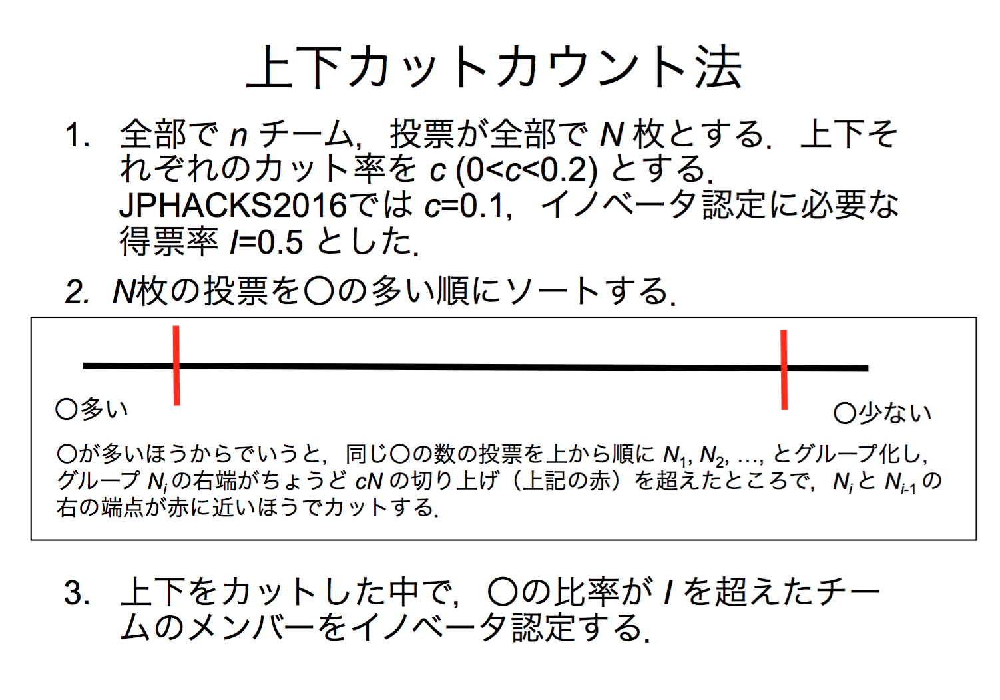

AwardDayにおける審査方法について
- AwardDayにおける審査とは、Awardノミネートチーム16チームからInnovator認定チーム・BestIdea賞・BestHack賞を選出する最終審査のことです。
Innovator認定方法
認定条件
以下のいずれかの条件が1つでも満たされていた場合 - オンライン審査にて技術点が満点であること - 当日のオーディエンス投票の結果「上下カットカウント法」を用いた得票総数のうち半数以上の票数を獲得していること - BestIdea賞の得票総数が最も多いこと
BestIdea賞
選定方法
- オーディエンス投票にて実施した、BestIdea票（◎の数）の総数が最も多かったチーム
BestHack賞
選定方法
- オンライン審査にて技術点が満点であるチーム内において
- オーディエンス投票にて実施した、BestIdea票（◎の数）の総数が最も多かったチーム
上下カットカウント法に関して
